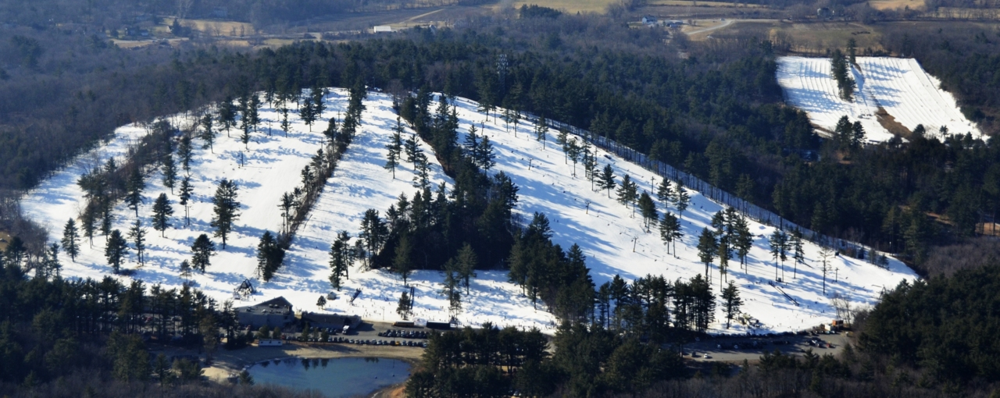
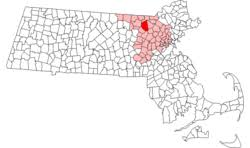
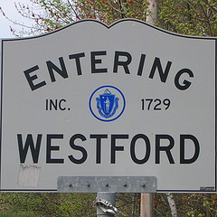
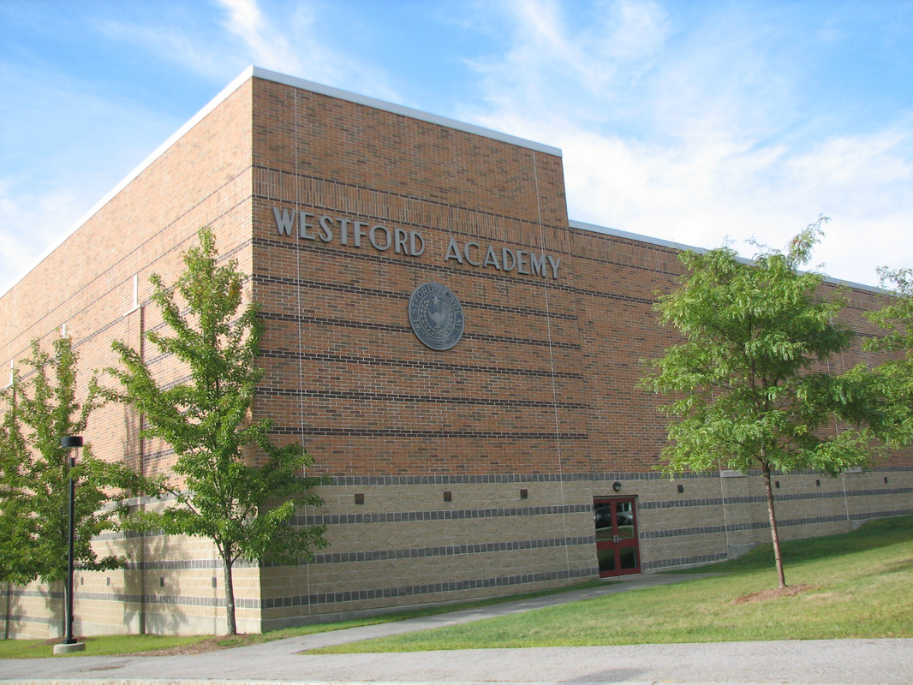
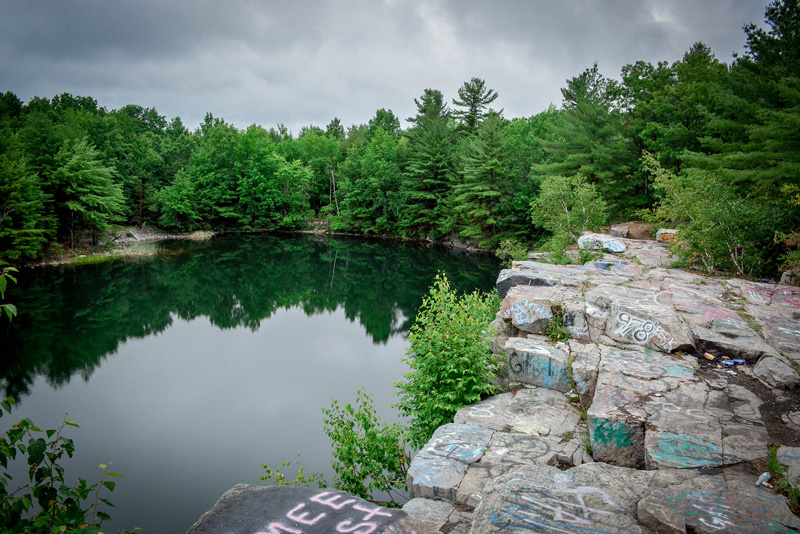

Westford became a town on September 23, 1729, after breaking off from the town next to it called Chelmsford. It is located in northern Massachusetts, right near the New Hampshire border. It is home to Westford Academy, East Boston Camps, Nashoba Valley Ski area, and the North American headquarters for Puma. Another very well known stop around town is the Merril's Quarry, where parts of the movie Grown Ups 2 was filmed. The town is 31.3 square miles big, and has a population of about 25,000 people. Westford was rated as #11 Best Places to live by CNN Money in 2013.
This is Nashoba Valley Ski Area and the Tubing park.
The red dot on the map is Westford, and the shading around it is Middlesex County.
 This is Westford Academy, the high school that I went to.
This is Merril's Quarry, a fun, but illegal spot to go quarry jumping.